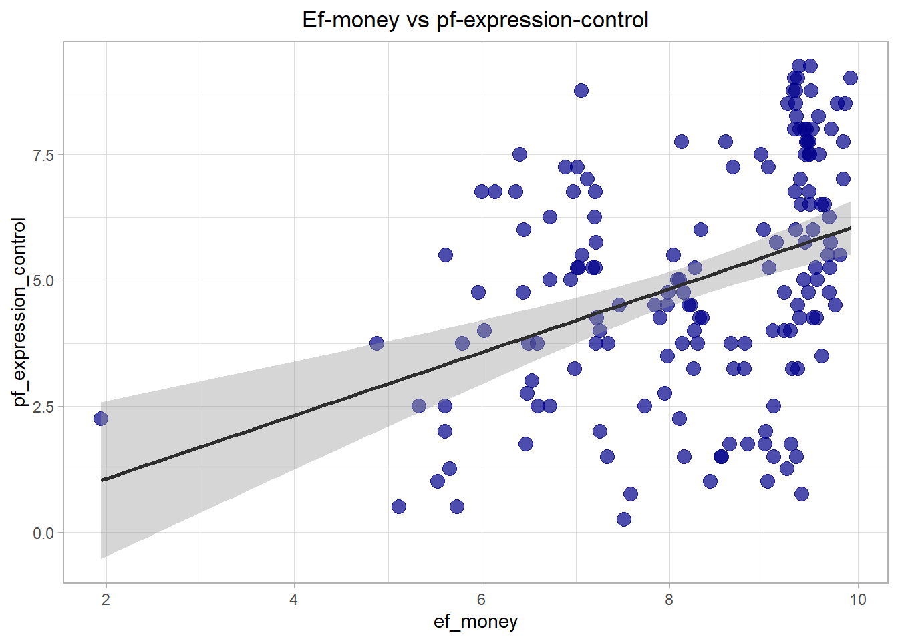

Assignment
‘Kyra Peters’
2021-02-26
Last updated: 2021-03-07
Checks: 7 0
Knit directory: myproject_KP/
This reproducible R Markdown analysis was created with workflowr (version 1.6.2). The Checks tab describes the reproducibility checks that were applied when the results were created. The Past versions tab lists the development history.
Great! Since the R Markdown file has been committed to the Git repository, you know the exact version of the code that produced these results.
Great job! The global environment was empty. Objects defined in the global environment can affect the analysis in your R Markdown file in unknown ways. For reproduciblity it’s best to always run the code in an empty environment.
The command set.seed(20210226) was run prior to running the code in the R Markdown file. Setting a seed ensures that any results that rely on randomness, e.g. subsampling or permutations, are reproducible.
Great job! Recording the operating system, R version, and package versions is critical for reproducibility.
Nice! There were no cached chunks for this analysis, so you can be confident that you successfully produced the results during this run.
Great job! Using relative paths to the files within your workflowr project makes it easier to run your code on other machines.
Great! You are using Git for version control. Tracking code development and connecting the code version to the results is critical for reproducibility.
The results in this page were generated with repository version 2ce76af. See the Past versions tab to see a history of the changes made to the R Markdown and HTML files.
Note that you need to be careful to ensure that all relevant files for the analysis have been committed to Git prior to generating the results (you can use wflow_publish or wflow_git_commit). workflowr only checks the R Markdown file, but you know if there are other scripts or data files that it depends on. Below is the status of the Git repository when the results were generated:
working directory clean
Note that any generated files, e.g. HTML, png, CSS, etc., are not included in this status report because it is ok for generated content to have uncommitted changes.
These are the previous versions of the repository in which changes were made to the R Markdown (analysis/KP_analysis.Rmd) and HTML (docs/KP_analysis.html) files. If you’ve configured a remote Git repository (see ?wflow_git_remote), click on the hyperlinks in the table below to view the files as they were in that past version.
| File | Version | Author | Date | Message |
|---|---|---|---|---|
| Rmd | 2ce76af | KichiPe | 2021-03-07 | zweiter Versuch |
Get started:
Load necessary libraries:
library(openintro)
library(tidyverse)
library(ggplot2)
library(broom)Choose and filter needed data
#load hfi data and filter for year 2016
hfi_2016 <- hfi %>% filter(year == 2016)Question 1:
Copy your model from the previous exercise that uses pf_expression_control to predict Human Freedom or hf_score. Using the tidy command, what does the slope tell us in the context of the relationship between human freedom and expression control in the country?
lm_hf_vs_pf <- lm(hf_score ~ pf_expression_control, data = hfi_2016)
tidy(lm_hf_vs_pf)# A tibble: 2 x 5
term estimate std.error statistic p.value
<chr> <dbl> <dbl> <dbl> <dbl>
1 (Intercept) 5.05 0.123 41.1 5.97e-87
2 pf_expression_control 0.368 0.0224 16.5 2.73e-36glance(lm_hf_vs_pf)# A tibble: 1 x 12
r.squared adj.r.squared sigma statistic p.value df logLik AIC BIC
<dbl> <dbl> <dbl> <dbl> <dbl> <dbl> <dbl> <dbl> <dbl>
1 0.629 0.627 0.660 271. 2.73e-36 1 -161. 329. 338.
# ... with 3 more variables: deviance <dbl>, df.residual <int>, nobs <int>Answer:
We expect for countries with a pf_expression_control of 0 (x = 0) a hf_score of 5.05. The slope has a value of
0.368, which means that for every 1 unit increase in pf_expression_control, the mean hf_score increases 0.368 units. \(R^2\) is 0.629.
Question 2:
Add region to the model from Q1 using lm(hf_score ~ pf_expression_control + region, data = hfi_2016). What do you notice about the slope between human freedom and expression control? How has it changed from the previous model. Do you think region is a confounder, and think about reasons why this might be so?
lm_hf_vs_pf_rg <- lm(hf_score ~ pf_expression_control + region, data = hfi_2016)
summary(lm_hf_vs_pf_rg)
Call:
lm(formula = hf_score ~ pf_expression_control + region, data = hfi_2016)
Residuals:
Min 1Q Median 3Q Max
-1.9030 -0.2887 0.0179 0.2704 1.6497
Coefficients:
Estimate Std. Error t value Pr(>|t|)
(Intercept) 6.05229 0.23549 25.701 < 2e-16 ***
pf_expression_control 0.27471 0.02585 10.627 < 2e-16 ***
regionEast Asia 0.24054 0.32845 0.732 0.465094
regionEastern Europe -0.10177 0.26736 -0.381 0.703991
regionLatin America & the Caribbean -0.56663 0.25987 -2.180 0.030771 *
regionMiddle East & North Africa -1.05998 0.25870 -4.097 6.8e-05 ***
regionNorth America 0.33030 0.46915 0.704 0.482498
regionOceania -0.13131 0.37504 -0.350 0.726741
regionSouth Asia -0.62691 0.26403 -2.374 0.018833 *
regionSub-Saharan Africa -0.97208 0.24500 -3.968 0.000112 ***
regionWestern Europe 0.04867 0.29823 0.163 0.870570
---
Signif. codes: 0 '***' 0.001 '**' 0.01 '*' 0.05 '.' 0.1 ' ' 1
Residual standard error: 0.5524 on 151 degrees of freedom
Multiple R-squared: 0.7545, Adjusted R-squared: 0.7382
F-statistic: 46.41 on 10 and 151 DF, p-value: < 2.2e-16tidy(lm_hf_vs_pf_rg)# A tibble: 11 x 5
term estimate std.error statistic p.value
<chr> <dbl> <dbl> <dbl> <dbl>
1 (Intercept) 6.05 0.235 25.7 5.19e-57
2 pf_expression_control 0.275 0.0258 10.6 4.80e-20
3 regionEast Asia 0.241 0.328 0.732 4.65e- 1
4 regionEastern Europe -0.102 0.267 -0.381 7.04e- 1
5 regionLatin America & the Caribbean -0.567 0.260 -2.18 3.08e- 2
6 regionMiddle East & North Africa -1.06 0.259 -4.10 6.80e- 5
7 regionNorth America 0.330 0.469 0.704 4.82e- 1
8 regionOceania -0.131 0.375 -0.350 7.27e- 1
9 regionSouth Asia -0.627 0.264 -2.37 1.88e- 2
10 regionSub-Saharan Africa -0.972 0.245 -3.97 1.12e- 4
11 regionWestern Europe 0.0487 0.298 0.163 8.71e- 1Calculation of the change in slope of the two models in %.
perc1 <- ((tidy(lm_hf_vs_pf)[2,2] - tidy(lm_hf_vs_pf_rg)[2,2]) / tidy(lm_hf_vs_pf)[2,2] ) *100
round(perc1, 1) estimate
1 25.4Answer:
Slope decreased from 0.368 to 0.275 when region was added as a further predictor. This means, that the influence of pf-expression-control becomes smaller. The region could be a potential confounder, since there are different government systems in various regions, which have influence on hf_score as well as on pf_expression_control. A rule of thumb is that if the slope changes by more than 10% with a new predictor, it is a potential confounder. By adding region to the model, the slope changes about 25.4 % and consequently could be a confounder.
Question 3:
Compare the \(R^2\) for the 2 models from Q1 and Q2. Is there an increase by adding region?
Think about the definition of \(R^2\). What does this mean in this context?
glance(lm_hf_vs_pf)# A tibble: 1 x 12
r.squared adj.r.squared sigma statistic p.value df logLik AIC BIC
<dbl> <dbl> <dbl> <dbl> <dbl> <dbl> <dbl> <dbl> <dbl>
1 0.629 0.627 0.660 271. 2.73e-36 1 -161. 329. 338.
# ... with 3 more variables: deviance <dbl>, df.residual <int>, nobs <int>glance(lm_hf_vs_pf_rg)# A tibble: 1 x 12
r.squared adj.r.squared sigma statistic p.value df logLik AIC BIC
<dbl> <dbl> <dbl> <dbl> <dbl> <dbl> <dbl> <dbl> <dbl>
1 0.754 0.738 0.552 46.4 4.52e-41 10 -128. 280. 317.
# ... with 3 more variables: deviance <dbl>, df.residual <int>, nobs <int>Answer:
For model 1 when comparing ‘hf_score’ and ‘pf_expression_control’ \(R^2\) has a value of 0.692.
Meaning that 69,2 % of the variability of hf_score can be explained by pf_expression_control. While adding region
as predictor, \(R^2\) rises to 0.754. Consequently 75.4 % of hf_score variability can be explained by the model.
Question 4:
Fit a new model that uses ef_money or monetary measure to predict hf_score. What does the slope tell us in the context of the relationship between human freedom and the economy in the country?
lm_hf_vs_ef <- lm(hf_score ~ ef_money, data = hfi_2016)
summary(lm_hf_vs_ef)
Call:
lm(formula = hf_score ~ ef_money, data = hfi_2016)
Residuals:
Min 1Q Median 3Q Max
-3.0405 -0.5558 0.1000 0.6293 1.8601
Coefficients:
Estimate Std. Error t value Pr(>|t|)
(Intercept) 2.73668 0.38713 7.069 4.56e-11 ***
ef_money 0.50388 0.04631 10.880 < 2e-16 ***
---
Signif. codes: 0 '***' 0.001 '**' 0.01 '*' 0.05 '.' 0.1 ' ' 1
Residual standard error: 0.821 on 160 degrees of freedom
Multiple R-squared: 0.4252, Adjusted R-squared: 0.4216
F-statistic: 118.4 on 1 and 160 DF, p-value: < 2.2e-16glance(lm_hf_vs_ef)# A tibble: 1 x 12
r.squared adj.r.squared sigma statistic p.value df logLik AIC BIC
<dbl> <dbl> <dbl> <dbl> <dbl> <dbl> <dbl> <dbl> <dbl>
1 0.425 0.422 0.821 118. 5.50e-21 1 -197. 400. 409.
# ... with 3 more variables: deviance <dbl>, df.residual <int>, nobs <int>Answer:
The slope has the value of 0.503 which is higher than in the previous models. Thus, a change in ef_money has a higher influence on the hf_score. An increase in the economy of the country thus has a stronger effect on human freedom. \(R^2\) with a value of 0.425 is, however, relatively low compared to the previous models.
Question 5:
Again add region to the model from Q4. Compare the slope and \(R^2\) with the model from Q4.
lm_hf_vs_ef_re <- lm(hf_score ~ ef_money + region, data = hfi_2016)
summary(lm_hf_vs_ef_re)
Call:
lm(formula = hf_score ~ ef_money + region, data = hfi_2016)
Residuals:
Min 1Q Median 3Q Max
-1.80379 -0.36127 0.02313 0.36008 1.33084
Coefficients:
Estimate Std. Error t value Pr(>|t|)
(Intercept) 3.55749 0.39319 9.048 6.77e-16 ***
ef_money 0.36406 0.03607 10.093 < 2e-16 ***
regionEast Asia 0.87288 0.32643 2.674 0.008321 **
regionEastern Europe 0.82942 0.25997 3.190 0.001728 **
regionLatin America & the Caribbean 0.41520 0.25664 1.618 0.107782
regionMiddle East & North Africa -0.79304 0.26518 -2.991 0.003252 **
regionNorth America 1.38334 0.46186 2.995 0.003207 **
regionOceania 1.43444 0.36573 3.922 0.000133 ***
regionSouth Asia 0.08793 0.27079 0.325 0.745855
regionSub-Saharan Africa -0.01738 0.25103 -0.069 0.944903
regionWestern Europe 1.40209 0.26670 5.257 4.91e-07 ***
---
Signif. codes: 0 '***' 0.001 '**' 0.01 '*' 0.05 '.' 0.1 ' ' 1
Residual standard error: 0.5643 on 151 degrees of freedom
Multiple R-squared: 0.7437, Adjusted R-squared: 0.7268
F-statistic: 43.83 on 10 and 151 DF, p-value: < 2.2e-16tidy(lm_hf_vs_ef_re)# A tibble: 11 x 5
term estimate std.error statistic p.value
<chr> <dbl> <dbl> <dbl> <dbl>
1 (Intercept) 3.56 0.393 9.05 6.77e-16
2 ef_money 0.364 0.0361 10.1 1.26e-18
3 regionEast Asia 0.873 0.326 2.67 8.32e- 3
4 regionEastern Europe 0.829 0.260 3.19 1.73e- 3
5 regionLatin America & the Caribbean 0.415 0.257 1.62 1.08e- 1
6 regionMiddle East & North Africa -0.793 0.265 -2.99 3.25e- 3
7 regionNorth America 1.38 0.462 3.00 3.21e- 3
8 regionOceania 1.43 0.366 3.92 1.33e- 4
9 regionSouth Asia 0.0879 0.271 0.325 7.46e- 1
10 regionSub-Saharan Africa -0.0174 0.251 -0.0692 9.45e- 1
11 regionWestern Europe 1.40 0.267 5.26 4.91e- 7glance(lm_hf_vs_ef_re)# A tibble: 1 x 12
r.squared adj.r.squared sigma statistic p.value df logLik AIC BIC
<dbl> <dbl> <dbl> <dbl> <dbl> <dbl> <dbl> <dbl> <dbl>
1 0.744 0.727 0.564 43.8 1.09e-39 10 -131. 287. 324.
# ... with 3 more variables: deviance <dbl>, df.residual <int>, nobs <int>Calculation of the change in slope of the two models in %.
perc2 <- ((tidy(lm_hf_vs_ef)[2,2] - tidy(lm_hf_vs_ef_re)[2,2]) / tidy(lm_hf_vs_ef)[2,2] ) *100
round(perc2, 1) estimate
1 27.7Answer:
Adding the region increases \(R^2\) from 0.425 to 0.744, almost doubling it. This means that 74.4% of the variances can now be explained by the model.
The slope, on the other hand, decreases from 0.503 to 0.364. Thus, an increase of ef_money by 1 unit now has a smaller effect on the hf_score. In this model, the slope changes by 27.7 % by adding region and is thus a potential confounder.
Question 6:
Finally fit a model with ef_money and pf_expression_control as exposures and hf_score as outcome.
Compare the slope and \(R^2\) from the models from Q1. Could ef_money be a confounder?
lm_hf_vs_ef_pf <- lm(hf_score ~ ef_money + pf_expression_control, data = hfi_2016)
summary(lm_hf_vs_ef_pf)
Call:
lm(formula = hf_score ~ ef_money + pf_expression_control, data = hfi_2016)
Residuals:
Min 1Q Median 3Q Max
-1.71067 -0.28669 0.03311 0.29490 1.46097
Coefficients:
Estimate Std. Error t value Pr(>|t|)
(Intercept) 2.79431 0.24351 11.47 <2e-16 ***
ef_money 0.31771 0.03146 10.10 <2e-16 ***
pf_expression_control 0.29629 0.01891 15.67 <2e-16 ***
---
Signif. codes: 0 '***' 0.001 '**' 0.01 '*' 0.05 '.' 0.1 ' ' 1
Residual standard error: 0.5164 on 159 degrees of freedom
Multiple R-squared: 0.7741, Adjusted R-squared: 0.7712
F-statistic: 272.4 on 2 and 159 DF, p-value: < 2.2e-16tidy(lm_hf_vs_ef_pf)# A tibble: 3 x 5
term estimate std.error statistic p.value
<chr> <dbl> <dbl> <dbl> <dbl>
1 (Intercept) 2.79 0.244 11.5 1.38e-22
2 ef_money 0.318 0.0315 10.1 7.74e-19
3 pf_expression_control 0.296 0.0189 15.7 4.68e-34glance(lm_hf_vs_ef_pf)# A tibble: 1 x 12
r.squared adj.r.squared sigma statistic p.value df logLik AIC BIC
<dbl> <dbl> <dbl> <dbl> <dbl> <dbl> <dbl> <dbl> <dbl>
1 0.774 0.771 0.516 272. 4.38e-52 2 -121. 251. 263.
# ... with 3 more variables: deviance <dbl>, df.residual <int>, nobs <int>Calculation of the change in slope of the two models in %.
perc3 <- ((tidy(lm_hf_vs_pf)[2,2] - tidy(lm_hf_vs_ef_pf)[3,2] ) / tidy(lm_hf_vs_pf)[2,2] ) *100
round(perc3, 1) estimate
1 19.6Answer: In Q1 the slope had a value of 0.368 and \(R^2\) of 0.629 In this model the slope of pf_expression control is 0.296 and for ef_money 0.317. \(R^2\) increased to 0.774. Thus, the model of Q6 explains more of the variability of hf_score than the model of Q1. The slope of pf_expression control decreases from 0.368 in Q1 to 0.296 in Q6 about 19.6 % and therefore indicating that ef_money is a confounder.
Question 7:
Use a linear regression model (and scatter plot) with ef_money as exposure and pf_expression_control as outcome,
to study whether ef_money has an association with pf_expression_control as well.
This might validate our finding that ef_money is a confounder between pf_expression_control as exposure
and hf_score as outcome from Q6.
ggplot(data = hfi_2016, aes(x = ef_money, y=pf_expression_control))+
geom_point(size =3.5, col= "darkblue", alpha = 0.7)+
geom_smooth(method = "lm", se = TRUE, col ="grey18")+
ggtitle("Ef-money vs pf-expression-control")+
theme_light()+
theme(plot.title = element_text(hjust = 0.5))`geom_smooth()` using formula 'y ~ x'
m1 <- lm(pf_expression_control ~ ef_money, data = hfi_2016)
glance(m1)# A tibble: 1 x 12
r.squared adj.r.squared sigma statistic p.value df logLik AIC BIC
<dbl> <dbl> <dbl> <dbl> <dbl> <dbl> <dbl> <dbl> <dbl>
1 0.143 0.137 2.16 26.6 7.22e-7 1 -354. 713. 722.
# ... with 3 more variables: deviance <dbl>, df.residual <int>, nobs <int>Calculation of the correlation of ef_money and pf_expression_control:
cor_ef_pf <- (cor(hfi_2016$ef_money, hfi_2016$pf_expression_control))
round(cor_ef_pf, 3)[1] 0.378Answer: To predict an outcome, the used exposures should be independent from each other. In the scatter plot ef_money and pf_expression_control seem to be slightly correlated when ef_money is higher than 4.5. But \(R^2\) is very low with 14.3 %, meaning than only a small portion of the variance of pf_expression control can be explained by ef_money. Also the correlation between these two predictors is only 0.378, which is no strong correlation.
You should set a maximum threshold at the beginning of the analysis, which degree of correlation you accept from (independent) two predictors. In this case, I would say that ef_money is not a confounder and ef_money and pf_expression_control can be used to predict the hf_score.
The END
 Super cute and absolutely true pic !! :-)
Super cute and absolutely true pic !! :-)
sessionInfo()R version 4.0.3 (2020-10-10)
Platform: x86_64-w64-mingw32/x64 (64-bit)
Running under: Windows 10 x64 (build 18363)
Matrix products: default
locale:
[1] LC_COLLATE=German_Germany.1252 LC_CTYPE=German_Germany.1252
[3] LC_MONETARY=German_Germany.1252 LC_NUMERIC=C
[5] LC_TIME=German_Germany.1252
attached base packages:
[1] stats graphics grDevices utils datasets methods base
other attached packages:
[1] broom_0.7.5 forcats_0.5.1 stringr_1.4.0
[4] dplyr_1.0.3 purrr_0.3.4 readr_1.4.0
[7] tidyr_1.1.2 tibble_3.0.5 ggplot2_3.3.3
[10] tidyverse_1.3.0 openintro_2.0.0 usdata_0.1.0
[13] cherryblossom_0.1.0 airports_0.1.0 workflowr_1.6.2
loaded via a namespace (and not attached):
[1] Rcpp_1.0.6 lattice_0.20-41 lubridate_1.7.9.2 ps_1.5.0
[5] utf8_1.1.4 assertthat_0.2.1 rprojroot_2.0.2 digest_0.6.27
[9] R6_2.5.0 cellranger_1.1.0 backports_1.2.1 reprex_1.0.0
[13] evaluate_0.14 highr_0.8 httr_1.4.2 pillar_1.4.7
[17] rlang_0.4.10 readxl_1.3.1 rstudioapi_0.13 whisker_0.4
[21] Matrix_1.2-18 rmarkdown_2.6 labeling_0.4.2 splines_4.0.3
[25] munsell_0.5.0 compiler_4.0.3 httpuv_1.5.5 modelr_0.1.8
[29] xfun_0.20 pkgconfig_2.0.3 mgcv_1.8-33 htmltools_0.5.1.1
[33] tidyselect_1.1.0 fansi_0.4.2 crayon_1.4.0 dbplyr_2.1.0
[37] withr_2.4.1 later_1.1.0.1 grid_4.0.3 nlme_3.1-149
[41] jsonlite_1.7.2 gtable_0.3.0 lifecycle_0.2.0 DBI_1.1.1
[45] git2r_0.28.0 magrittr_2.0.1 scales_1.1.1 cli_2.3.0
[49] stringi_1.5.3 farver_2.0.3 fs_1.5.0 promises_1.2.0.1
[53] xml2_1.3.2 ellipsis_0.3.1 generics_0.1.0 vctrs_0.3.6
[57] tools_4.0.3 glue_1.4.2 hms_1.0.0 yaml_2.2.1
[61] colorspace_2.0-0 rvest_0.3.6 knitr_1.31 haven_2.3.1